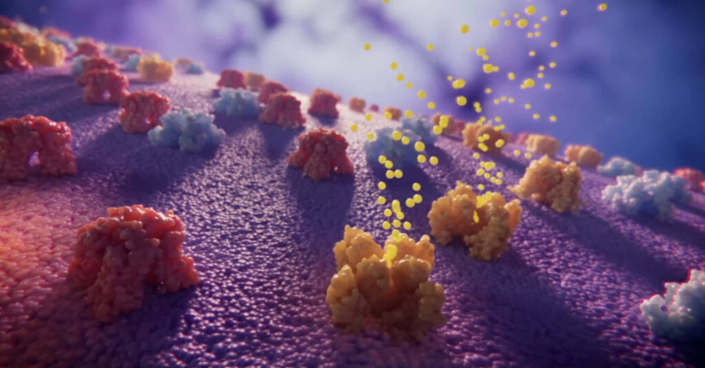
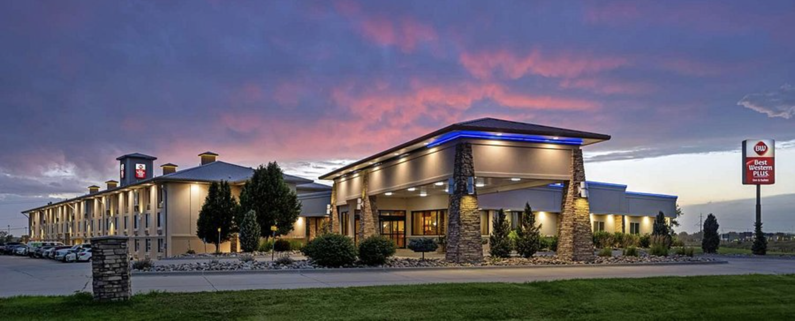

XVIVO: 27% more organic inquiries for a medical animation company
XVIVO had strong rankings but poor metadata, duplicate content, and a content structure that didn't match user intent. I fixed their metadata, rewrote underperforming pages, built topic clusters, and systematically improved internal linking — driving a 27% lift in organic inquiries in three months.
+72%
Impressions
+45%
Organic clicks
+27%
Conversions
Rukkus: 121,420 new visitors for a live entertainment startup
A newly launched ticket marketplace needed organic authority fast. Through data-driven PR, infographic outreach, a press launch, competitor link gap analysis, and university discount partnerships, I secured placements in CNN, Forbes, Sports Illustrated and more — driving a 1,256% traffic increase that helped lead to the startup's acquisition in 2018.
+1,256%
Organic traffic
27
High-DA backlinks
6mo
Timeline

Epic Reads: 37% more online sales for a HarperCollins book blog
Epic Reads was publishing 10+ articles a week but targeting topics nobody searched for. I identified high-volume, low-competition book genre keywords, built detailed content briefs for the writing team, and optimised every on-page element to guide readers toward product pages — growing sales by 37%.
+37%
Online sales
50
Keywords targeted
10+
Articles/week optimised

Best Western: 349% more AI Overview visibility for a global hotel brand
After Google's AI Overview rollout hit organic traffic hard, Best Western needed a strategy to recover. I implemented schema markup, rewrote content to directly answer user queries, resolved duplicate content issues, and built theme-based landing pages for high-intent searches — rebounding traffic and surging AI visibility by Q2 2025.
+349%
AI Overview keywords
+18.5%
Organic traffic
+8%
Conversions
Chase Explorer Card: 69.8% more organic clicks for America's largest bank
Chase wanted to improve search performance for their Explorer Card site but was missing key queries their customers were actually searching for. I conducted keyword and competitive research to surface content gaps, then executed on-page updates, metadata fixes, and internal linking improvements — delivering a 69.8% increase in organic clicks and 21.3% more impressions year-over-year.
+69.8%
Organic clicks
+21.3%
Impressions
6mo
Timeline
Want results like these?
Every project is different. Send me a note about your situation and let's talk through what's possible.